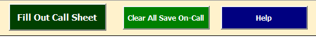
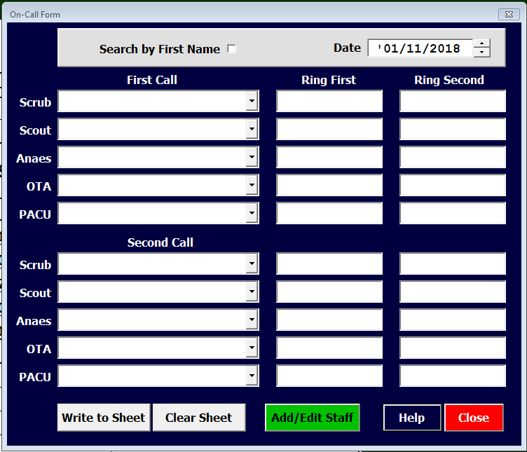
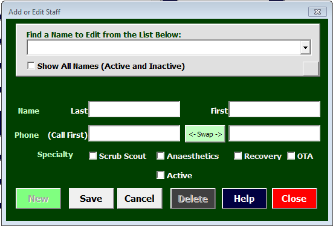

Call Sheet - The Forms¶
Call Sheet uses names, phone numbers and roles entered into the NamesPhones sheet to populate the Call Sheet fields on the On-Call form. It was developed to facilitate publishing the Call Sheet form for the Operating Theatres and Post-Op Recovery to submit to the after-hours coordinator.
Call Sheet has two forms… the “On-Call” form, launched from the Call Sheet worksheet and the “Add or Edit Staff” form, launched from the “On-Call” form.
The On-Call Form¶
The main form in Call Sheet is launched via the “Fill Out Call Sheet” button on the “Call Sheet” worksheet:
Whilst the fields on the sheet can be filled out manually, the provided “On-Call” form:
is designed to make the process much faster and less likely to create errors. The “On-Call” form has three basic areas:
The Add or Edit Staff Form¶
The “Add or Edit Staff” form:
is launched by the green “Add/Edit Staff” button on the “On-Call” form. This form has three basic areas: